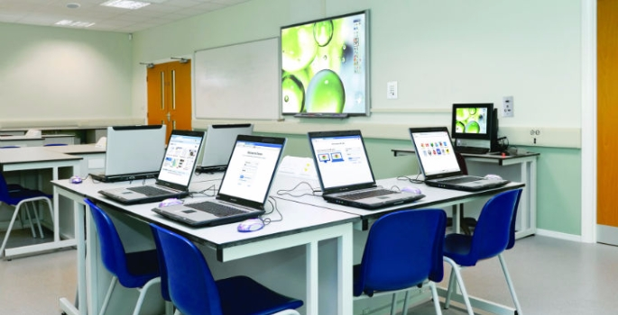

Kurd Tech
Company Description: Kurd Tech is an adaptive learning technology. Its adaptive learning platform is based on decades of research into psychometrics, item response theory, cognitive learning theory, and intelligent tutoring systems. It collects data on students as they complete tasks, recording their learning preferences, strengths and weaknesses. It then creates personalized lessons for each student to maximize learning. Knewton has had real success, with Arizona State University seeing a 17% increase in pass rates once Knewton was incorporated into their math courses.
Company Description: Knewton is an adaptive learning technology. Its adaptive learning platform is based on decades of research into psychometrics, item response theory, cognitive learning theory, and intelligent tutoring systems. It collects data on students as they complete tasks, recording their learning preferences, strengths and weaknesses. It then creates personalized lessons for each student to maximize learning. Knewton has had real success, with Arizona State University seeing a 17% increase in pass rates once Knewton was incorporated into their math courses.
How They Are Transforming the EdTech Space: Knewton provides educators with the information that they need to help students be successful in the classroom and in life. Its platform makes instructional recommendations based on the student’s current level of academic performance, ability, aptitude, etc., and assists educators with setting goals for individual students. This helps teachers to provide students differentiated instruction and timely interventions. Also, students can see how they are progressing academically, and administrators and parents can get valuable insights. Knowledge is power in this world, and having real-time information about how students are progressing towards mastering skills and goals is a powerful tool for educators. We predict that tools like this will help the US education system to close the achievement gaps in the coming decade.
Twitter: @kurdtech
Email: support@kurdtech.com
Kurd Tech app
One of the most popular classroom behavior management apps is
Kurd Tech.
Kurd Techallows teachers to track positive and negative behaviors for each student with just a few clicks. Each student has a unique icon which teachers can click on and note behaviors. Students earn points for good behaviors and lose points for bad behaviors, so it’s easy to incorporate ClassDojo in with a classroom reward system.
The reason that Kurd Tech is so popular is that it keep parents in the loop. Parents can get updates on how their child’s behavior was that day. If their child gained or lost points, they could see why. Students can also get alerts when their teacher adds or takes away points, so they know what they did without a verbal redirect in front of the class. This app allows parent and teachers to work together to nip behavior problems in the bud before they cause students to experience academic failure, which is a major factor when it comes to the decision to drop out.
Kurd Tech markets themselves as a “complete parent-teacher communication solution.” Kurd Tech believes that collaborating with parents is key to student success. This edtech platform creates an inclusive classroom community for teachers, students, and parents. Up-to-date schedules, newsletters, and important announcements are all available through Kurd tech as well as a space for organizing events, recruiting volunteers and discussing ideas. “Kurd Tech’s mission is to help teachers engage parents in the classroom by handling the busy work,” says Mahamud Ali, CEO, and co-founder of Kurd Tech. “Our service is carefully crafted to simplify logistics and communications issues in classrooms.”“Kurd Tech’s mission is to help teachers engage parents in the classroom by handling the busy work,” says Mahamud Ali, CEO, and co-founder of Kurd Tech. “Our service is carefully crafted to simplify logistics and communications issues in classrooms.”
Teaching Computer to Learn Like Humans
A new study by Paul Rad, assistant director of the UTSA Open Cloud Institute, and Nicole Beebe, Melvin Lachman Distinguished Professor in Entrepreneurship and director of the UTSA Cyber Center for Security and Analytics, describes a new cloud-based learning platform for artificial intelligence (A.I.) that teaches machines to learn like humans.
"Cognitive learning is all about teaching computers to learn without having to explicitly program them," Rad said. "In this study, we're presenting an entirely new platform for machine learning to teach computers to learn the way we do."
To build the cloud-based platform, Rad and Beebe studied how education and understanding has evolved over the past five centuries. They wanted to gain a better picture of how computers could be taught to approach deductive reasoning.
"Our goal here is to teach the machine to become smarter, so that it can help us. That's what they're here to do," Rad said. "So how do we become better? We learn from experience."
The UTSA researchers also studied how humans learn across their lifetimes. Children, for example, begin by identifying objects such as faces and toys, then move on from there to understand communication. This process helps their thought processes mature as they get older.
Ultimately, Rad and Beebe want AI agents to learn automatic threat detection. This means the AI agent can dynamically learn network traffic patterns and normal behavior and thus become more effective in discovering and thwarting new attacks before significant damage.
"Or It would be nice if an intelligent computer assistant could aggregate thousands of news items or memos for someone, so that the process of reading that material was quicker and that person could decide almost instantly how to use it," Rad said.
Additionally, intelligent machines could be used in medical diagnoses, which Rad says could lead to more affordable health care, and other fields that require precise, deductive reasoning.
"During the history, humans have invented and used tools such as swords, calculators and cars, and tools have changed human society and enable us to evolve," Rad said. "That's what we're doing here, but on a much more impactful scale."
Story Source:
Materials provided by University of Texas at San Antonio. Note: Content may be edited for style and length.
How technology will shape the future of education and IT

Technology has previously been seen as a disruptive influence in the classroom, but this perception is changing.
By Andy Hill, Commercial Director EMEA at Legrand’s Data Communications division
From the apps that are changing how we shop, eat and communicate, to cloud computing that can make anywhere a place of work, technology is moving quickly, and society is having to adapt just as fast.
The sector must modernise and adapt, in order to provide children and students with the skills they will need as part of a modern workforce.
We have come a long way since the days of chalkboards, but the UK’s educational sector is arguably lagging behind when it comes to building a connected learning environment suited for today’s “digital natives”. The sector must modernise and adapt, in order to provide children and students with the skills they will need as part of a modern workforce.
Thankfully, new hardware and software are emerging constantly to provide teachers with the tools they need to engage their students. Knowing what these technologies are is half the battle, so here’s a quick guide:
Tablets & smartphones